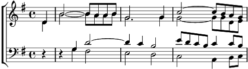

[TB] Refrain:
Noël, enfant (qui) vient du Paradis
1. Comme les canons, la colombe,
Il n'a que des chansons pour les bombes -ou
Noël enfant (qui) vient et nous dit -ou
Soliste
Noël 6 fois
Refrain
2. Comme la prison, l'espérance
Au milieu du béton, l'innocence -ou
Noël enfant (qui) vient et nous dit -ou
Soliste
Noël 6 fois
Refrain
3. Comme de l'oubli, une étoile
Sur l'océan maudit, la voile -ou
Noël enfant (qui) vient et nous dit -ou
Soliste
Noël 6 fois
Refrain
4. Comme nos saisons, une abeille
Aux murs de l'horizon, le soleil -ou
Noël enfant (qui) vient et sourit -bf